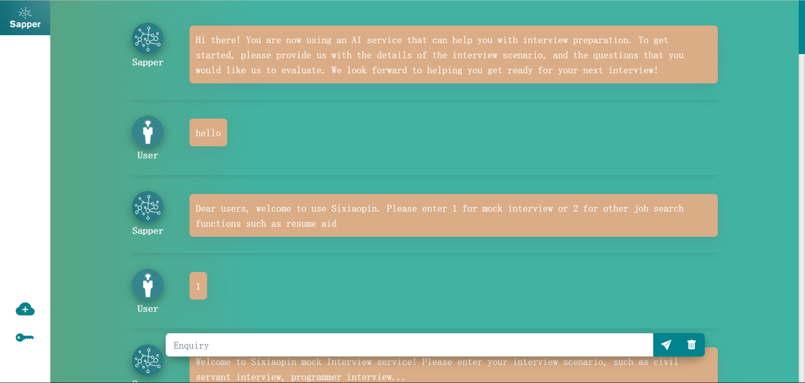
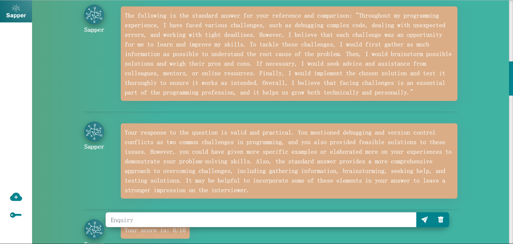
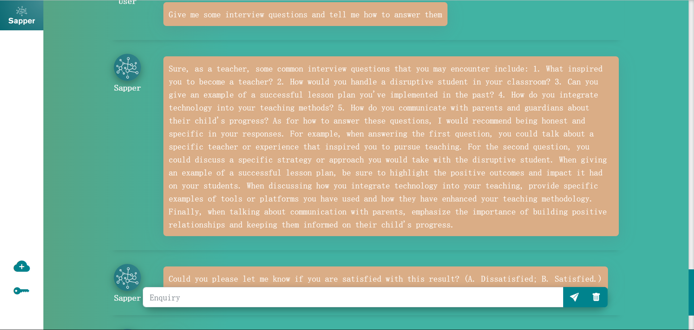
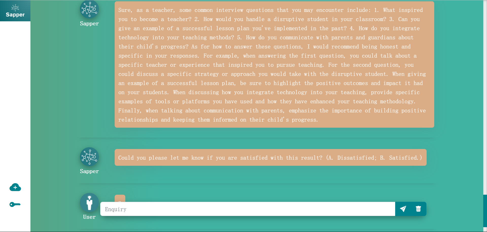
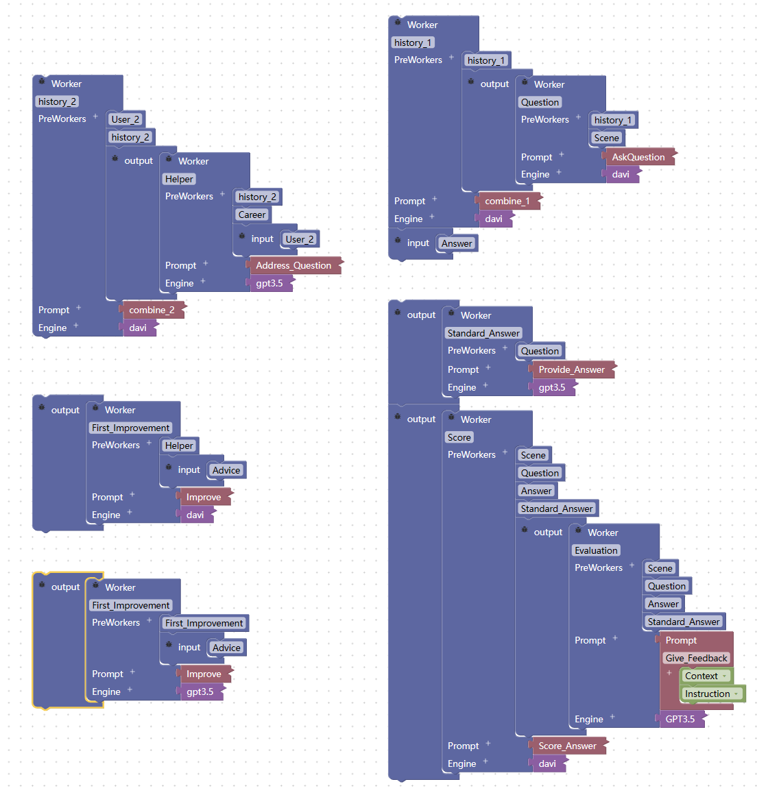

Si Xiao Pin---An AI Job Search Assistant
Author: Chenhua Liu
Let me revolutionize your job search by utilizing cutting-edge AI technology to uncover hidden opportunities and help you stand out in a competitive job market.
Looking for a job can be a daunting task, especially when you have to sift through countless job listings, tailor your resume and cover letter for each application, and prepare for interviews. As a developer, I recognized the need for an AI-powered solution that could streamline the job search process and help job seekers stand out from the crowd. This is why I developed an AI job search assistant.
What is an AI job search assistant?
An AI job search assistant is an intelligent software application that utilizes machine learning and natural language processing technologies to assist job seekers in the job search process. It offers a variety of features, such as personalized job recommendations, resume and cover letter optimization, interview preparation. The details are as follows:
APPLICATION SCENARIOS AND END USERS
We first discuss the potential applications of “Si Xiao Pin”, the targeted end users, and their respective needs.
Application scenarios and targeted end users
Application scenarios mainly include but are not limited to the following six:
- Resume Optimization: The AI job search assistant can analyze the resume submitted by users and optimize it based on job requirements, industry standards, and other factors, to increase the likelihood of the job seeker's resume being selected for further consideration.
- Job Recommendations: The AI job search assistant can recommend job opportunities to users based on their job preferences and career backgrounds, thereby increasing their chances of finding suitable employment.
- Interview Preparation: The AI job search assistant can provide users with interview question banks and guidance on interview techniques based on the type of job and interview process, helping job seekers prepare for interviews and increase their chances of success.
- Intelligent Communication: The AI job search assistant can serve as a bridge between job posting companies and job seekers, providing guidance and answering questions, which can help improve job seekers' confidence and efficiency in job searches.
- Mock Interviews: The job search assistant can provide users with mock interview services, helping them practice interview skills and response strategies, improving their confidence and response capabilities. Through mock interviews, users can become familiar with the interview process, understand common interview questions and answers, and receive feedback and advice from professionals, thus better preparing for interviews and increasing the likelihood of success.
Career Planning: The AI job search assistant can provide users with career planning advice and development paths based on their job preferences and backgrounds, helping job seekers better plan and manage their career paths.
Targeted end users:
- Job seekers: individuals seeking jobs or a career change who wish to use an AI job search assistant to improve their resumes, interview skills, and job search strategies.
- HR recruiters: personnel responsible for the recruitment process of a company or organization who wish to use an AI job search assistant to simplify and speed up the recruitment process, while improving recruitment efficiency and accuracy.
- Career counselors: professional career development counselors who wish to use an AI job search assistant to help clients identify their career goals, optimize their career development path, and provide relevant job search advice.
APPLICATION USAGE
Users choose different functions according to their needs
Provide standard answers to interview questions and score users' responses
Reply to a user's request for help
Ask if the user is satisfied, if not, modify (not demonstrated here)
THE EXPLORATION OF THE PRODUCT
During the Ask Questions module experiment, we found that if LLM is only instructed to ask interview questions to users, it not only responds differently each time but also tends to ask the same questions repeatedly after responding. In order to improve the performance of the module and prevent such issues, we realized the need to provide additional prompts to limit the LLM's question function. This will help in ensuring a more controlled and streamlined interview process, where questions are asked only as needed, without causing redundancy or repetition.
Through the interaction with LLM, to understand some basic functions of job-hunting function; And understand some process of the interview, in order to limit the function of the simulation mold block; Understand the basic interview scoring criteria.
So, how does it work? Let's break it down.
Product design:
The “Si Xiao Pin” app is divided into two modules: the job search assistant module and the mock interview module.
The job search assistant module can be roughly divided into three working units. The first unit is used to extract the profession from the user's input as part of the input for the second unit. The second unit can answer user's questions about job search based on the user's input about job search issues and the profession obtained from the first unit. Then, it will enter the third unit to ask the user if they are satisfied with the response. If not, it will modify the response according to the user's input.
Mock Interview Module: This module consists of four working units. The first unit generates an interview question for the user based on a provided interview scenario. After the user inputs their response, the second unit provides a standard answer based on the interview question generated by the previous unit. Then, the third unit evaluates the user's response based on the interview question, scenario, standard answer, and user input, and provides feedback to the user. Finally, the user's response is scored based on the output of the previous unit.The following is the design drawing of the product:
Fig-1: System Design of Product
What are the product design features of the AI job search assistant?
The product design overall adopts the AI-Chain philosophy, linking the inputs and outputs of multiple working units to make LLM's answers more reasonable. Specifically, the final design philosophy allows each physically separated module to be logically connected to one another, so that each working unit has a certain degree of connection, forming a chain-like structure with close front-to-back connections.
RAPID PROTOTYPING TOOL
The AI job search assistant was developed using a non-code-friendly AI integrated development environment (IDE) called Sapper. The tool supports code-free programming and drag-and-drop development, and was launched in March 2023. Sapper is like a production line for AI products, helping people develop various AI applications in a short period of time. Users of this IDE only need a general understanding of the expected functionality of the AI tools they want to develop. Using Sapper's unique puzzle-like development model, each required function can be placed in a separate unit of work, along with hints, model selection, and logic, and then logically pieced together to complete the development process. The development process is simple and straightforward. The following figure shows the main parts of Sapper's AI job search assistant:

Fig-1: Worker Design of the Product
FUTURE DEVELOPMENT DIRECTION
As the job market becomes increasingly competitive, job seekers are constantly looking for new ways to stand out and get noticed by potential employers. That's where AI job search assistants come in - powerful tools that leverage the latest advances in machine learning and natural language processing to help job seekers find their dream job.
- Customized Career Coaching: One of the most exciting possibilities for the future of AI job search assistants is the potential for customized career coaching. By analyzing a job seeker's skills, experience, and goals, an AI-powered career coach could provide personalized advice on everything from resume writing to interview preparation. With this kind of tailored guidance, job seekers could make smarter, more strategic decisions about their career paths.
- Improved Personalization: Currently, our AI job search assistant utilizes a user's resume to recommend suitable jobs. However, we plan to expand this feature by incorporating the user's career interests, skills, and location to make personalized job recommendations. This will enable the assistant to provide more relevant job recommendations that align with the user's long-term career goals.
- Integration with Recruitment Platforms: We believe that integrating our AI job search assistant with recruitment platforms will enable users to apply for jobs directly from the assistant. This will streamline the job application process, reduce the time taken to apply for multiple jobs, and provide users with more opportunities to gain employment.
- In conclusion, the future direction of our AI job search assistant is aimed at improving its capabilities, expanding its functionality, and making it a one-stop-shop for job seekers. By providing users with personalized job recommendations, company research and matchmaking, and direct integration with recruitment platforms and learning management systems, we believe that our AI job search assistant will revolutionize the job search process and provide users with a more streamlined path towards achieving their career goals.
Over the course of this blog, we have explored various ways in which AI can assist in job searching, from resume optimization and job matching to interview preparation and career coaching. As AI continues to advance, we can expect even more exciting developments in this area.
Thank you for joining me on this journey, and I wish you all the best in your career endeavors.